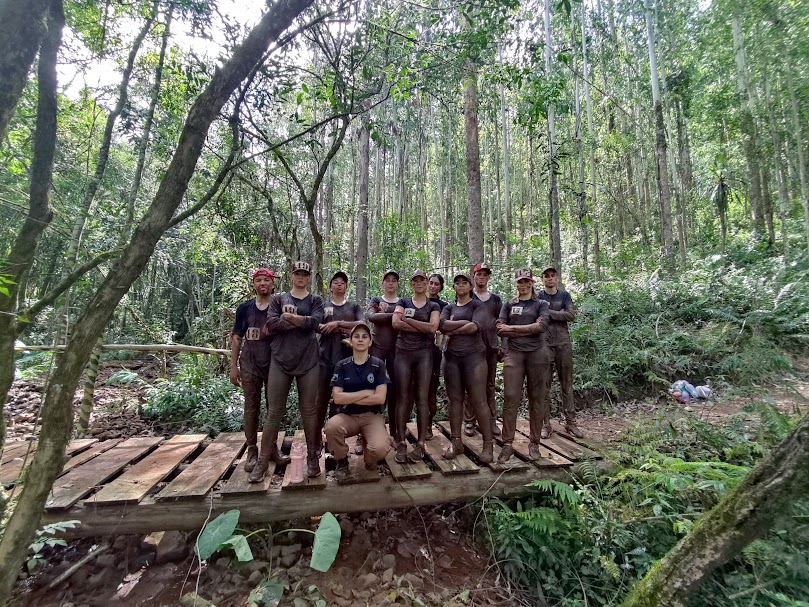
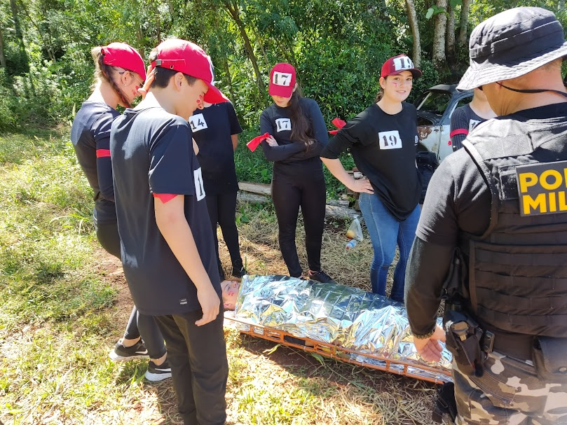
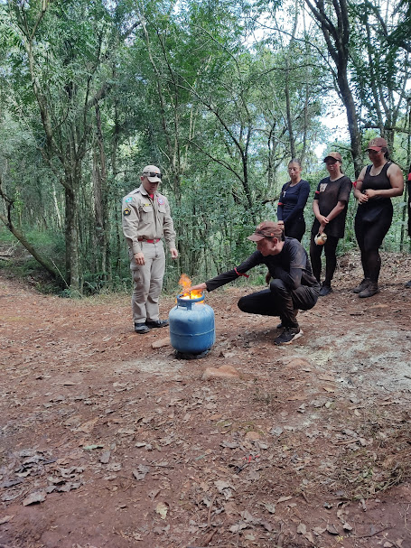

A Marcha de Ferro é uma tradição marcante e significativa para os alunos do 6º Colégio Militar de Pato Branco (CPM). Este evento anual não apenas simboliza a dedicação e o espírito de corpo dos alunos, mas também destaca a importância da disciplina, resistência e camaradagem que são pilares fundamentais da formação militar.
Marcha de Ferro

Os Bombeiros abordaram tópicos fundamentais como a avaliação inicial da cena, técnicas de Reanimação Cardiopulmonar (RCP), tratamento de ferimentos e hemorragias, e atendimento a casos de engasgo. Além disso, forneceram orientações sobre como lidar com situações de incêndio e exposição à fumaça.


Durante a palestra, foram abordados os tipos de incêndio e o uso adequado de extintores, além de técnicas para lidar com vazamentos de gás, como reconhecer sinais e tomar medidas corretivas. Na sessão prática, os alunos participaram de simulações de combate a incêndios e exercícios de detecção e manejo de vazamentos de gás.